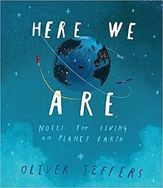

《流浪地球》

总体观点
《流浪地球》开创了中国科幻独有的“故土执念”与“宇宙级愚公移山”美学范式。面对太阳即将爆发氦闪吞噬内太阳系的绝对绝境，人类没有选择制造世代飞船逃亡，而是倾尽全球之力给整个地球母亲装上行星发动机，带着全部山川河流一同启航流浪。
作品的核心震撼不仅在于万台发动机喷射百公里等离子光柱的宏伟工业巨构，更在于对极端极端环境下人类群体心理异化的冷酷洞察。刹车时代的海啸、逃逸时代的叛乱与五千名科学忠勇之士被冻毙后的太阳氦闪，将宇宙的冷酷客观与人类理智的有限性推向极致的悲剧崇高。
核心观点
-
1. 带着地球流浪：深植于农业文明的故土神圣执念
与西方科幻飞船派的个人主义殖民逻辑不同，《流浪地球》将文明的根基深植于人类脚下的大地与母星，体现了中华文明生生不息的宗土情怀。
小说中主人公站在赤道巨大发动机下，看着曾经湛蓝的太平洋海水冻结成千里玄冰，人类在地下五百米城市坚守文明火种。 -
2. 宏大工程奇迹与个体情感维度的残酷剥离
在文明生死存亡的至暗时刻，浪漫爱情、家庭温情与艺术审美被极度压缩为最低限度的生存计算，生与死的伦理规则被彻底重写。
主人公父亲在太空站抽签决定妻子与母亲谁能进入地下城避难，面对生死签的绝对冷酷，个体尊严让位于人类种族的延续。 -
3. 怀疑派叛乱：科学真理与民粹群氓的悲壮对决
当灾难迟迟未发生且耗费代际牺牲时，群体极易陷入反智阴谋论，将科学家的忠诚当成谎言，以正义的名义残害真正的文明守望者。
叛军攻占控制中心，将坚持联合政府路线的五千名科学家和军人脱去宇航服放逐在零下一百度的海冰上冻成冰雕，然而太阳在下一秒骤然爆发致命氦闪。 -
4. 两千五百年的代际传承：跨越百代人的宇宙远征
流浪地球航程需要经历一百代人的生死轮回；这意味着出发的人永远看不到终点，抵达的人早已遗忘起点，唯有信仰在深空航程中代代相传。
小说结尾主人公满头白发，在冰原上向孩子们讲述那个曾经拥有蔚蓝天空与金色沙滩的旧太阳时代，犹如传唱神话。 -
5. 大刘式的冷酷宇宙美学与科学诗意
刘慈欣将天体物理学的冰冷法则转化为直击灵魂的诗意意象，在宇宙宏大的物理尺度面前，人类的渺小与抗争的悲壮形成剧烈震颤。
“我知道已被忘却，流浪的航程太长太长，但那一时刻要叫我一声啊，当神圣的红帆升起，当阿尔法星升起”的传世挽歌。
全书思维导图 · 知识脉络树
全书结构
-
第一部分：刹车时代
科学家探测到太阳氦闪危机，联合政府启动流浪地球计划；北半球建造万台发动机迫使地球停转，引发全球大海啸，人类迁入地下城。
描写童年时期看到的黎明与黄昏交界线上永不落下的发动机等离子蓝光，以及极昼极夜带来的全球地表生态浩劫。 -
第二部分：逃逸时代
发动机开足马力推离地球脱离公转轨道，飞向木星借力引力弹弓加速，地表温度骤降至零下一百度，大气层开始冻结成干冰雪花。
地球从木星巨大红色大红斑旁边掠过时，引力潮汐引发的全球大地震与岩浆倒灌地下城的惊心动魄场景。 -
第三部分：叛乱与氦闪
四代人之后地球驶出小行星带，民间通过民间天文望远镜观测怀疑太阳并无异样，爆发席卷全球的反对联合政府大叛乱与最后的氦闪降临。
叛军用最高道德口号将五千名联合政府最后的忠勇卫士逼上冰海，就在欢呼胜利的瞬间，整个内太阳系被氦闪红巨星烈焰吞噬。 -
第四部分：流浪时代（新太阳时代）
地球彻底脱离太阳系引力束缚，成为一颗孤独流浪的星际流浪行星，在漫无边际的寒冷虚空中向着四点三光年外的半人马座进发。
主人公垂暮之年仰望寂静深邃的星空，深信百代之后的子孙将在半人马座温暖的新太阳光芒下重新走上绿色葱郁的大地。